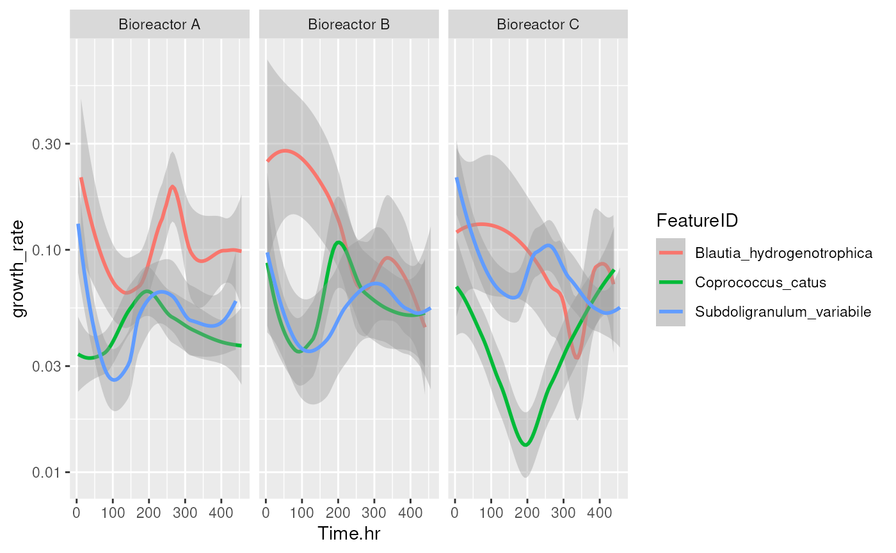

R/AllGenerics.R, R/getShortTermChange.R
getShortTermChange.RdCalculates short term changes in abundance of taxa using temporal abundance data.
addShortTermChange(x, ...)
getShortTermChange(x, ...)
# S4 method for class 'SummarizedExperiment'
addShortTermChange(x, name = "short_term_change", ...)
# S4 method for class 'SummarizedExperiment'
getShortTermChange(x, time.col, assay.type = "counts", group = NULL, ...)A
SummarizedExperiment
object.
additional arguments.
time.interval: Integer scalar. Indicates the increment
between time steps. By default, the function compares each sample to the
previous one. If you need to take every second, every third, or so, time
step, then increase this accordingly. (Default: 1L)
Character scalar. Specifies a name for storing
short term results. (Default: "short_term_change")
Character scalar. Specifies a name of the column from
colData that identifies the sampling time points for the samples.
Character scalar. Specifies which assay values are
used in the dissimilarity estimation. (Default: "counts")
Character scalar. Specifies a name of the column from
colData that identifies the grouping of the samples.
(Default: NULL)
getShortTermChange returns DataFrame object containing
the short term change in abundance over time for a microbe.
addShortTermChange, on the other hand, returns a
SummarizedExperiment
object with these results in its metadata.
These functions can be utilized to calculate growth metrics for short term change. In specific, the functions calculate the metrics with the following equations:
$$time\_diff = time_{t} - time_{t-1}$$
$$abundance\_diff = abundance_{t} - abundance_{t-1}$$
$$growth\_rate = abundance\_diff - abundance_{t-1}$$
$$rate\_of\_change = abundance\_diff - time\_diff$$
Ji, B.W., et al. (2020) Macroecological dynamics of gut microbiota. Nat Microbiol 5, 768–775 . doi: https://doi.org/10.1038/s41564-020-0685-1
library(miaTime)
# Load time series data
data(minimalgut)
tse <- minimalgut
# Get relative abundances
tse <- transformAssay(tse, method = "relabundance")
# Calculate short term changes
df <- getShortTermChange(
tse, assay.type = "relabundance", time.col = "Time.hr",
group = "StudyIdentifier")
# Calculate the logarithm of the ratio described in Ji, B.W., et al. (2020)
tse <- transformAssay(
tse, assay.type = "relabundance", method = "log10", pseudocount = TRUE)
#> A pseudocount of 3.52021787110118e-06 was applied.
df <- getShortTermChange(
tse, assay.type = "log10", time.col = "Time.hr", group = "StudyIdentifier")
# Select certain bacteria that have highest growth rate
select <- df[["growth_rate"]] |> abs() |> order(decreasing = FALSE)
select <- df[select, "FeatureID"] |> unique() |> head(3)
df <- df[ which(df[["FeatureID"]] %in% select), ]
# Plot results
library(ggplot2)
p <- ggplot(df, aes(x = Time.hr, y = growth_rate, colour = FeatureID)) +
geom_smooth(level = 0.5) +
facet_grid(. ~ StudyIdentifier, scales = "free") +
scale_y_log10()
p
#> Warning: NaNs produced
#> Warning: log-10 transformation introduced infinite values.
#> `geom_smooth()` using method = 'loess' and formula = 'y ~ x'
#> Warning: Removed 310 rows containing non-finite outside the scale range
#> (`stat_smooth()`).
